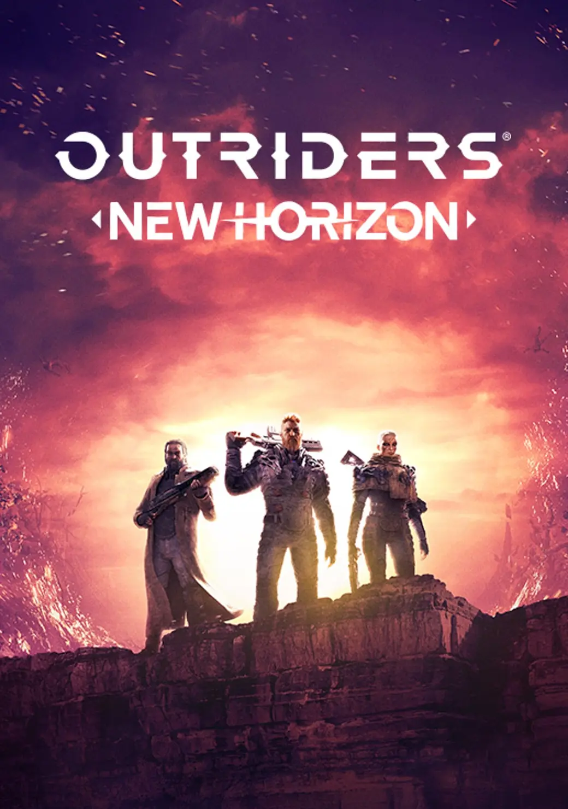
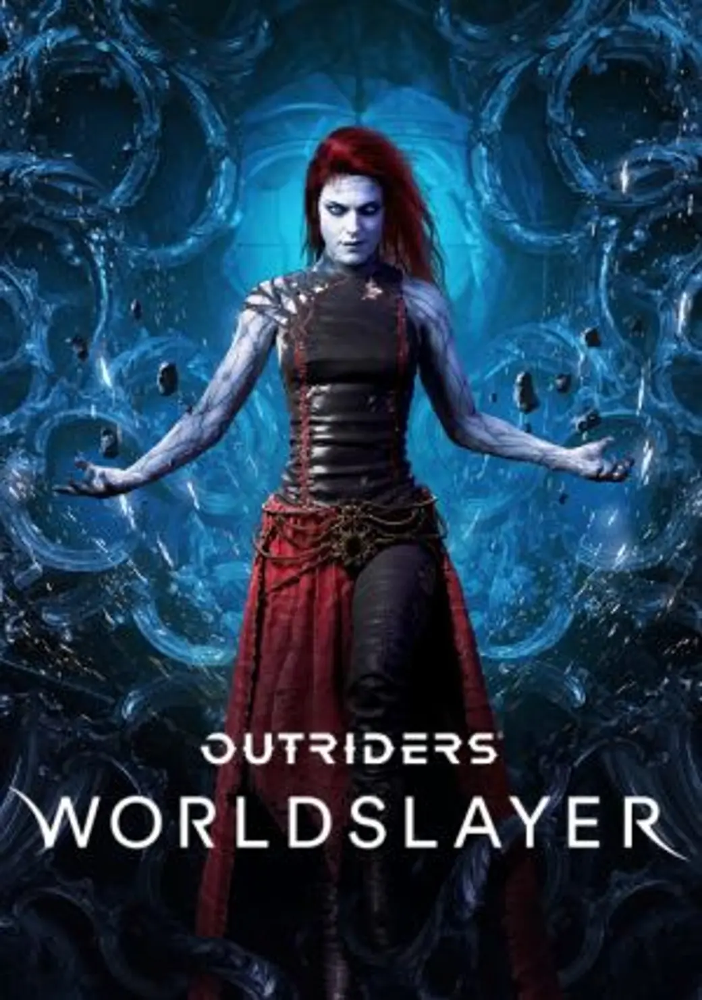
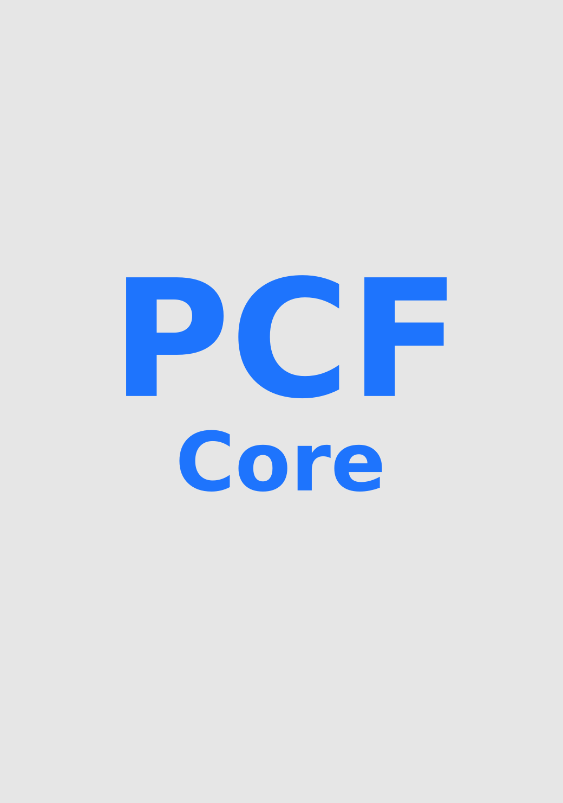

Experience and my works
Work Experience, Released and Unreleased Titles



- Outriders: New Horizon (UE4) - performance testing and analysis on X1/PS4 of new levels added with the update.
- Outriders: Worldslayer (UE4) - performance testing, analysis and some optimization work (setting up HLODs in one of the levels) on X1/PS4.
-
NDA project 1 (UE5) - creating a tool for managing WP HLODs settings on actors within a level, R&D into World Partition HLOD system added with UE5 and creation of appropriate workflows,
performance testing, analysis, optimization and rendering breakdowns on XSX/PS5/PC.
Working with VFX, Environment art teams, helping with their tasks and issues.
Working with QA and TechQA team on establishing automated performance gathering workflows, creating overall test design.
- NDA project 2 (UE5) - implementation of and consultation regarding WP HLODs for procedurally generated assets, performance analysis and rendering breakdowns.
-
PCF Core/Framework (UE5) - maintenance and transition of project-specific tooling into universally available ones, establishment of performance targets,
guidelines on best practices, organization of automated WP HLODs rebuilds.
Documentation creation and maintenance for owner-less tools, relevant R&D and design docs, writing rendering breakdowns and comparison docs across several projects with the goal of establishing universal quality and performance targets.
City Props Master Material
Features
- Grime and dirt masks support, and grime application in places of contact.
- Graffiti decals done from inside the material.
- Material-controlled traffic light.
- Custom Primitive Data utilization for extra customization per actor without extra material instances.
Jared Character Customizer (Prototype, Godot)
Prototype made within a roughly a day to try and gather interest and start up a fan project with the intention of using the customized character as avatars for people within the community.
Character design by Michi Mochievee, model made and rigged (not visible in the video) by myself, as well as created a custom shader for it, and written the customization logic
Game mods
Modding for PAYDAY 3 I did in free time, mostly texture and mesh replacements.